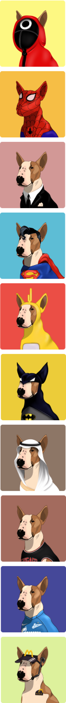
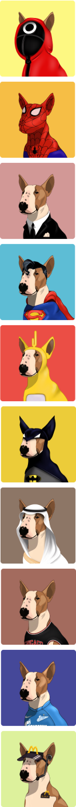
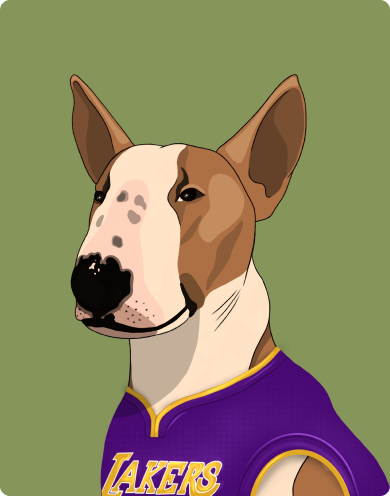
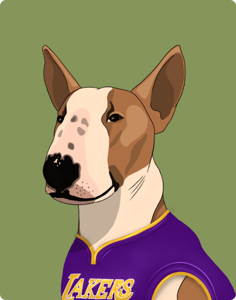

The relapses initially would happen once or twice a day. It eventually escalated to the
point where at the relapses’s peak such "attacks" would happen every 10 minutes.
Bublick went out of control,ended up not trusting us, at home he was completely
uncontrollable. The “attacks” would repeatedly happen every day and night, he was
growling
all the time, snapping, chasing his tail, biting himself until he started bleeding. He
was
not being able to fall asleep, neither were we.
We had visited approximately a dozen of doctors, cynologists, but no one knew what the
issue
was and how to treat it.
As time went by nothing changed. A lot of money had been spent, many tears had been shed
due
to despair and lack of comprehension of how to continue to live with such a dog.
It was becoming more and more difficult with every day. We had different thoughts. All
the
methods which had been used did not work. Later on even started thinking about putting
the
dog away began to come on mind .
What would you do if you were in our shoes ?
Just imagine having a dog by your side that you can not control. A dog which snaps every
10
minutes during the night and starts barking loudly, biting its tail till it’s bleeding
and
not responding or reacting at all. The dog which at an unfortunate moment may also bump
into
your hand instead of it’s own tail and accidentally bite it. The dog which is in a weird
state, suffers and you have no way to help. All in all, we were trying to find the
solution
over and over again. We wrote, called and met with different specialists. We never gave
up
and hoped to find someone who could help. Subsequently after six months of agony it
finally
happened. The neurologist at the Moscow clinic, who by that time had already dealt with
three similar cases, gave us a hand in terms of understanding the situation.
Such behavior has no diagnosis, it's simply because our dog's psyche has been disturbed
and
nothing can be done about it. It is not curable, it will remain forever, you can only
muffle
this condition by making your dog take pills for lifetime and exposing it to a stable
daily
training.
We started the training right from the first day the puppy was delivered to our home.
The
dog was trained in obedience , endurance and tricks. Later on we chose an interesting
NoseWork discipline - the process of a dog using its natural desire to hunt in order to
determine and detect different scents such as the scent of cinnamon. We even took part
in
competitions and continued to develop our dog’s skills in this direction.
This is how our long and thorny path of treatment began; the path which in general will
never end, however, we do not lose hope, we continue to give the pills to the dog and
train
him hard instead.
Thanks to the medicine , training and other activities, Bublick has become more
stress-resilient and obedient. The connection has been reestablished between us, and as
a
result, life has become much easier!
I do hope that after reading this text you have managed to obtain faith that all life's
obstacles and hardships can be overcome. The main thing is not to despair and always try
all
the options.
 

 
